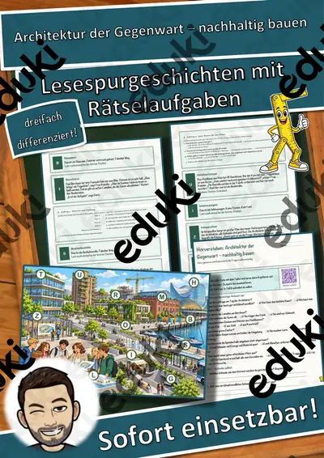
Architektur der Gegenwart – nachhaltig bauen – Lesespurgeschichte mit Rätselaufgaben (Klasse 10)

Bildsprache der Werbung – wie Bilder überzeugen – Lesespurgeschichte mit Rätselaufgaben (Klasse 10)

Das Bauhaus – Design für alle – Lesespurgeschichte mit Rätselaufgaben (Klasse 10)

Das Gewissen und die innere Stimme – Lesespurgeschichte mit Rätselaufgaben (Klasse 10)
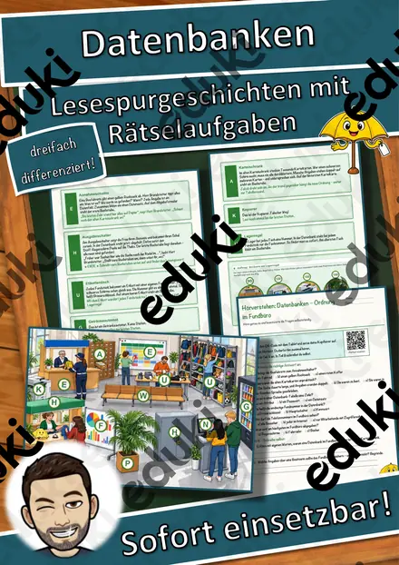
Datenbanken – Ordnung im Fundbüro – Lesespurgeschichte mit Rätselaufgaben (Klasse 10)
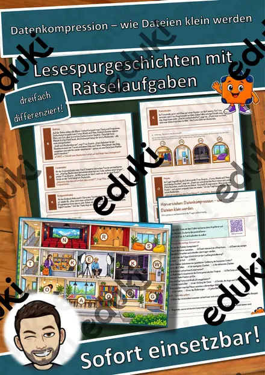
Datenkompression – wie Dateien klein werden – Lesespurgeschichte mit Rätselaufgaben (Klasse 10)
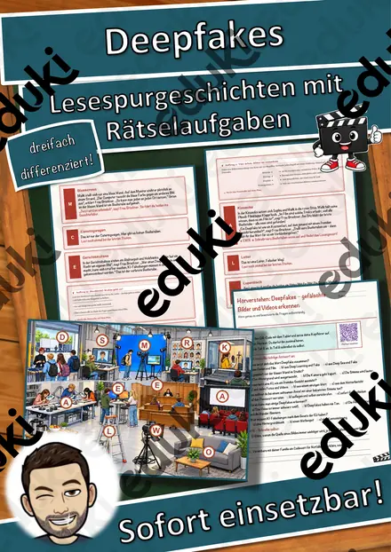
Deepfakes – gefälschte Bilder und Videos erkennen – Lesespurgeschichte mit Rätselaufgaben (Klasse 10)

Der Hackathon – im Team eine digitale Idee entwickeln – Lesespurgeschichte mit Rätselaufgaben (Klasse 10)

Der Mauerfall – vom geteilten Land zur Einheit – Lesespurgeschichte mit Rätselaufgaben (Klasse 10)

Der Supermarkt – Ein Praktikum im Einzelhandel – Lesespurgeschichte mit Rätselaufgaben (Klasse 10)
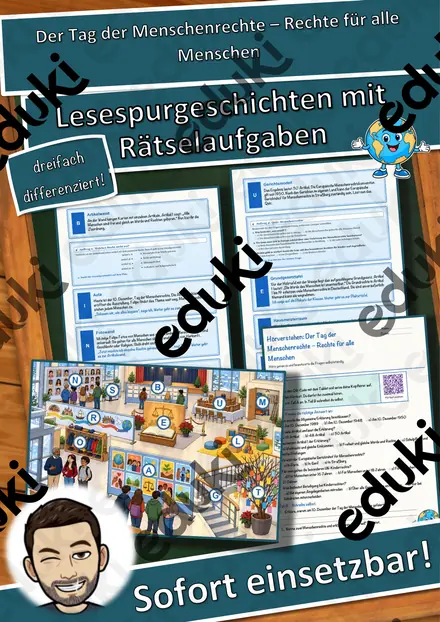
Der Tag der Menschenrechte – Rechte für alle Menschen – Lesespurgeschichte mit Rätselaufgaben (Klasse 10)

Die Anfänge der Philosophie – eine Zeitreise ins antike Athen – Lesespurgeschichte mit Rätselaufgaben (Klasse 10)

Die Elektrowerkstatt – Ein Praktikum beim Elektroniker – Lesespurgeschichte mit Rätselaufgaben (Klasse 10)
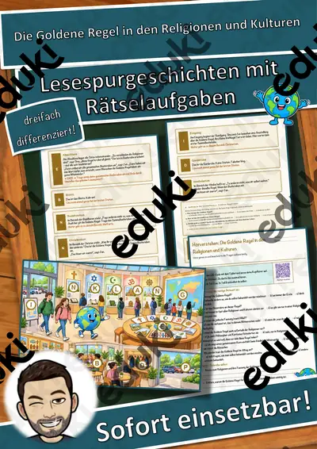
Die Goldene Regel in den Religionen und Kulturen – Lesespurgeschichte mit Rätselaufgaben (Klasse 10)
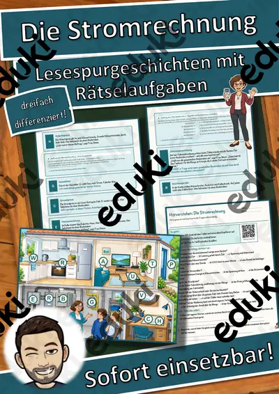
Die Stromrechnung – Lesespurgeschichte mit Rätselaufgaben (Klasse 10)

Die erste Steuererklärung – Lohnsteuer, Werbungskosten und Erstattung – Lesespurgeschichte mit Rätselaufgaben (Klasse 10)
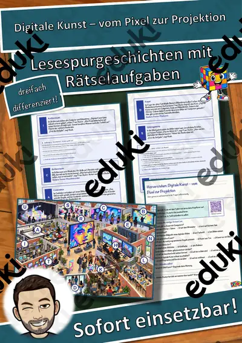
Digitale Kunst – vom Pixel zur Projektion – Lesespurgeschichte mit Rätselaufgaben (Klasse 10)
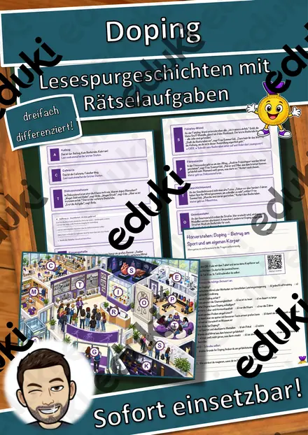
Doping – Betrug am Sport und am eigenen Körper – Lesespurgeschichte mit Rätselaufgaben (Klasse 10)
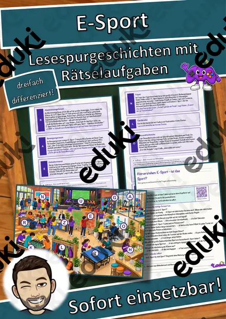
E-Sport – ist das Sport? – Lesespurgeschichte mit Rätselaufgaben (Klasse 10)

Elektronische Musik – vom Theremin bis zum Laptop – Lesespurgeschichte mit Rätselaufgaben (Klasse 10)

Expressionismus – Farbe als Gefühl – Lesespurgeschichte mit Rätselaufgaben (Klasse 10)

Fair wirtschaften – Wirtschaftsethik zwischen Gewinn und Verantwortung – Lesespurgeschichte mit Rätselaufgaben (Klasse 10)

Freiheit und Verantwortung – Lesespurgeschichte mit Rätselaufgaben (Klasse 10)

Gentechnik – Chancen und Risiken abwägen – Lesespurgeschichte mit Rätselaufgaben (Klasse 10)
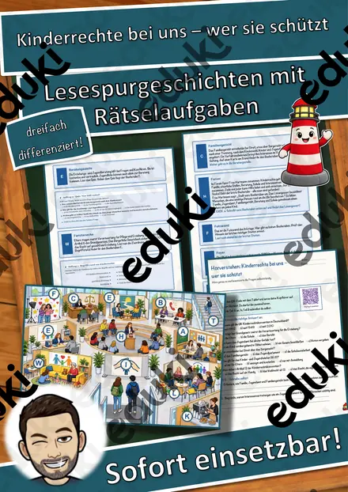
Kinderrechte bei uns – wer sie schützt – Lesespurgeschichte mit Rätselaufgaben (Klasse 10)
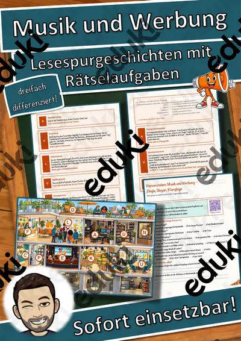
Musik und Werbung – Jingle, Slogan, Klanglogo – Lesespurgeschichte mit Rätselaufgaben (Klasse 10)

Neue Musik – Klangexperimente im 20. Jahrhundert – Lesespurgeschichte mit Rätselaufgaben (Klasse 10)
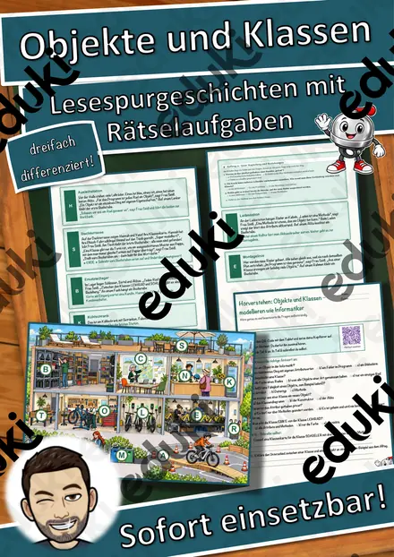
Objekte und Klassen – modellieren wie Informatiker – Lesespurgeschichte mit Rätselaufgaben (Klasse 10)

Rollenbilder im Wandel – Gleichberechtigung von Frau und Mann – Lesespurgeschichte mit Rätselaufgaben (Klasse 10)
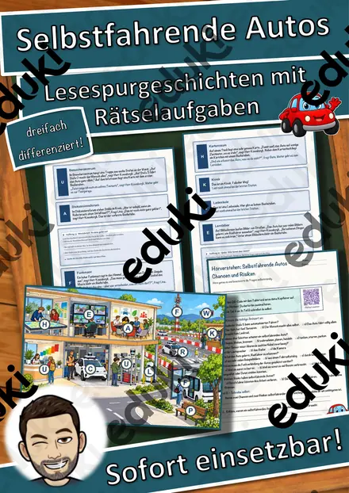
Selbstfahrende Autos – Chancen und Risiken – Lesespurgeschichte mit Rätselaufgaben (Klasse 10)
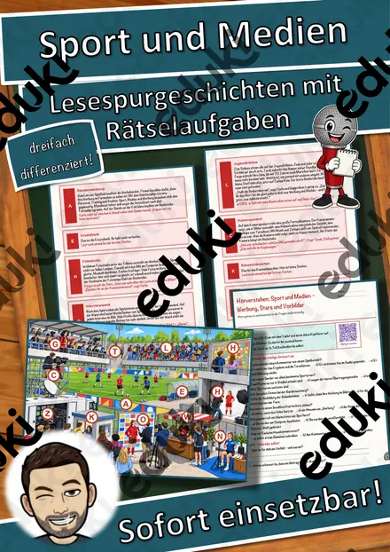
Sport und Medien – Werbung, Stars und Vorbilder – Lesespurgeschichte mit Rätselaufgaben (Klasse 10)
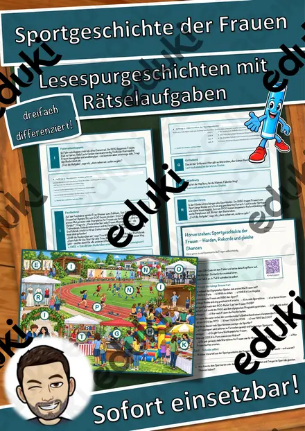
Sportgeschichte der Frauen – Hürden, Rekorde und gleiche Chancen – Lesespurgeschichte mit Rätselaufgaben (Klasse 10)
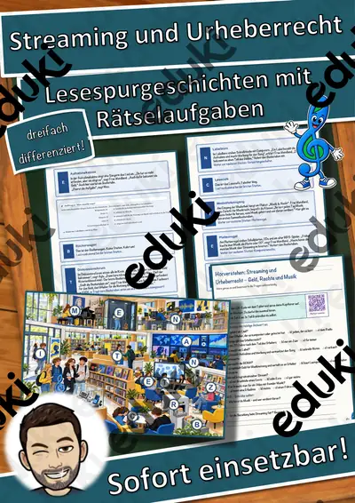
Streaming und Urheberrecht – Geld, Rechte und Musik – Lesespurgeschichte mit Rätselaufgaben (Klasse 10)

Surrealismus – Bilder aus dem Unbewussten – Lesespurgeschichte mit Rätselaufgaben (Klasse 10)
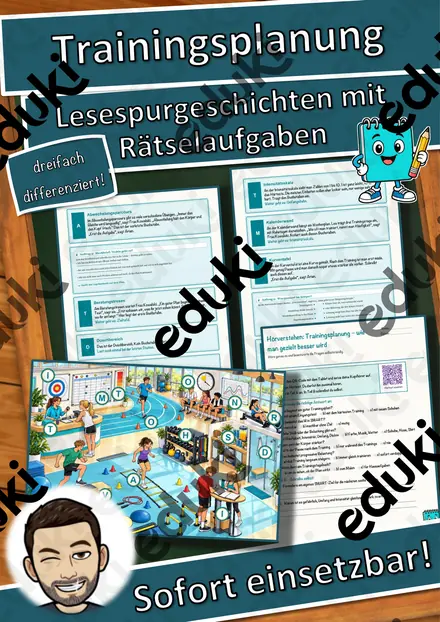
Trainingsplanung – wie man gezielt besser wird – Lesespurgeschichte mit Rätselaufgaben (Klasse 10)

Was darf die Medizin? – Grundfragen der Medizinethik – Lesespurgeschichte mit Rätselaufgaben (Klasse 10)
Lesespurgeschichten in der 10. Klasse
In der zehnten Klasse dient die Lesespur vor allem der Wiederholung: Ein ganzes Lehrplanthema wird in einer Stunde abgeschritten, mit Aufgaben im Prüfungsformat.
Jede Geschichte liegt in drei Niveaustufen vor, die sich in Textlänge, Satzbau und Aufgabenanspruch unterscheiden. Weg, Stationen und Lösungswort bleiben gleich, sodass alle Fassungen gleichzeitig in einer Klasse laufen können.
Themen auf dieser Seite
Beispiele aus dieser Sammlung: Trainingsplanung · Der Tag der Menschenrechte · Gentechnik · Die Goldene Regel in den Religionen und Kulturen · Sportgeschichte der Frauen · Die erste Steuererklärung · Datenkompression · Musik und Werbung.